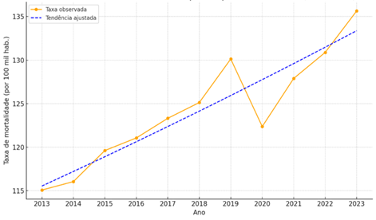
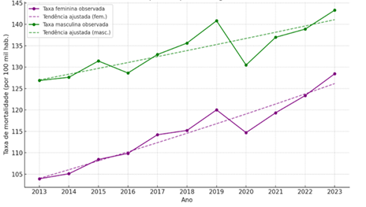

Figura 1. Tendência temporal da taxa de mortalidade por neoplasias de 2013 a 2023, São Paulo, Brasil.

Tendência crescente significativa
Entre 2013 e 2023, a taxa de mortalidade por neoplasias no estado de São Paulo apresentou aumento significativo, com Variação Percentual Anual (Annual Percent Change - APC) de 1,45% ao ano.
Observação:
Houve queda pontual em 2020, mas o padrão geral é de crescimento consistente, atingindo o maior valor em 2023.
Houve queda pontual em 2020, mas o padrão geral é de crescimento consistente, atingindo o maior valor em 2023.
Taxa 2013
113,7
por 100 mil hab.
Taxa 2023
135,7
por 100 mil hab.
Figura 2. Tendência temporal da taxa de mortalidade por neoplasias segundo sexo de 2013 a 2023, São Paulo, Brasil.

Variação percentual anual por sexo
Masculino
1,06%
IC95%: 0,48 – 1,67 · p < 0,000001
Feminino
1,95%
IC95%: 1,57 – 2,36 · p < 0,000001
⭐ Destaques
- Homens apresentaram taxas mais altas em todo o período.
- Mulheres apresentaram crescimento mais acelerado.